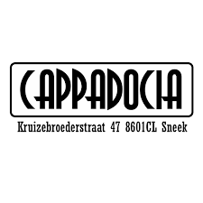
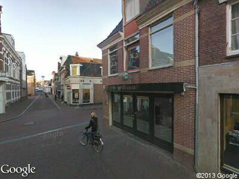
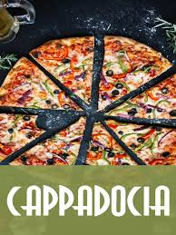

Cappadocia is de nummer 2 Turk van Nederland naar mijn mening. De woonplaats van deze Dönerzaak is sneek. Het heeft een 4 sterren Review van 200 mensen die het hebben ingevuld. Dit lijkt niet hoog maar ze hebben wel de hoogste rating van alle Dönerzaken in Sneek. De Dönerzaak kenners waarmee ik heb gesproken zijn hier nog nooit geweest wat betekent dat het compleet mijn eigen mening is.
  1. Amon 3. The Döner Company 4. Dönerzaak de Vergt 5. Pistachio